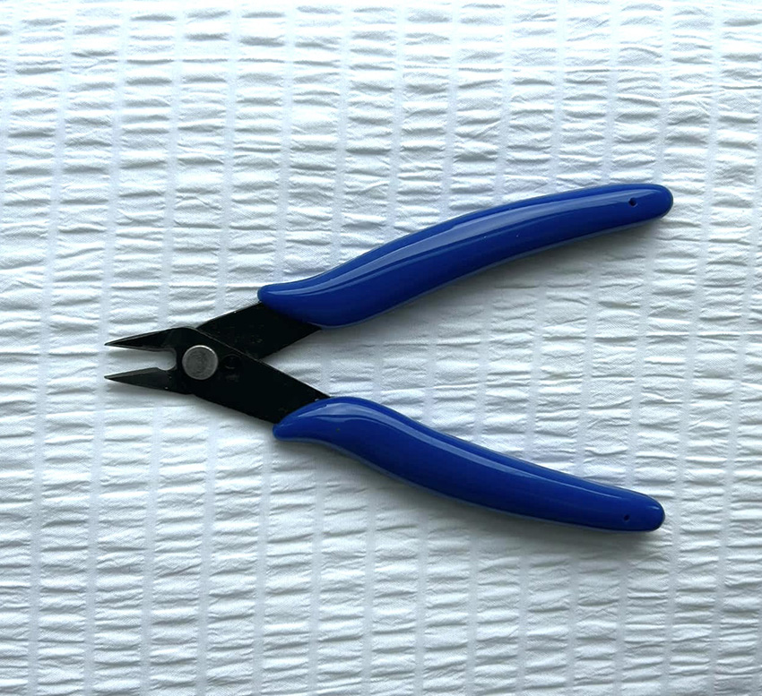
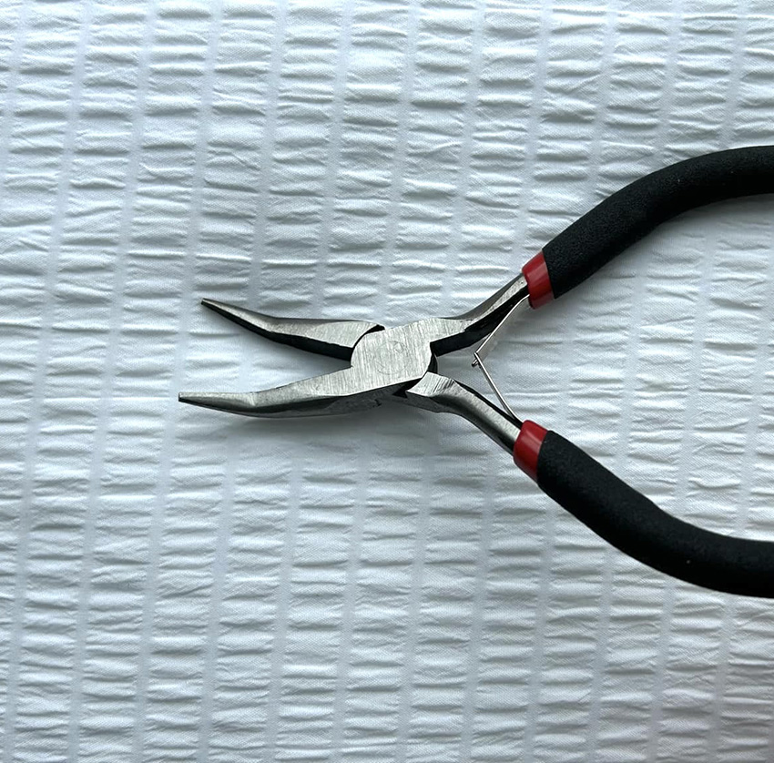
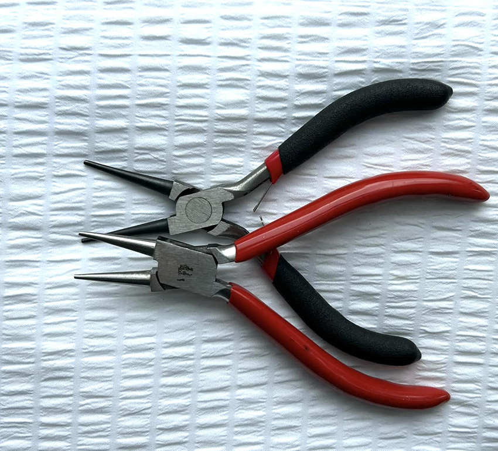

VÆRKTØJ
Her finder du alt det nødvendige udstyr til at skabe dine egne smykker - fra pincetter og trådskærere til lim og smykkeforlæggere. Udforsk vores udvalg og gør dit smykkedesign endnu nemmere og sjovere!
Gængse værktøjer:
Spids og flad bidetang
Bidetangen er skarp og spids og så er den flad bagpå så man kan komme helt tæt på når man f.eks laver vedhæng med perlestave.
Spidstang
Uundværlig tang når man laver smykker.Det er nemt at komme helt tæt på materialet når man f.eks laver vedhæng til smykker hvor man skal trykke den afklippet perlestav / smykketråd, helt ind til.

Buet spidstang
Denne tang er egentlig en multitang. Den er nem at opsamle materialerne med, da den er spids og buer. Den er flad så det er nemt at holde fast på emnerne.
Rundtang
En rundtang bruges til at lave rundinger i smykkewire. Den mest typiske teknik kaldes 8-taller, hvor du laver et lille øje, der fungerer som et "øsken".
